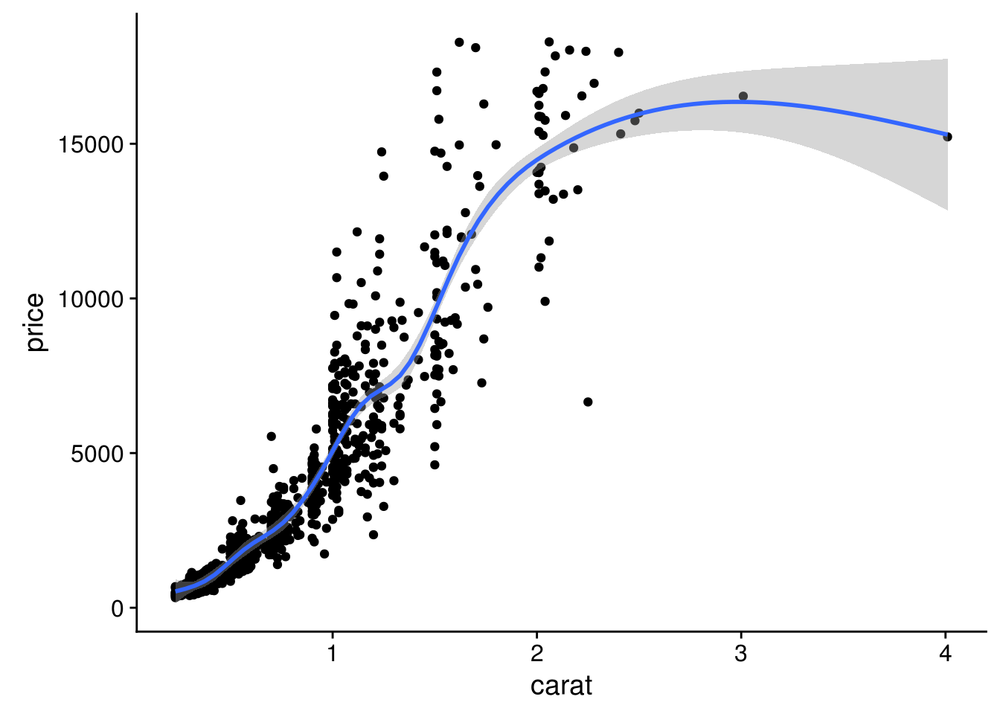
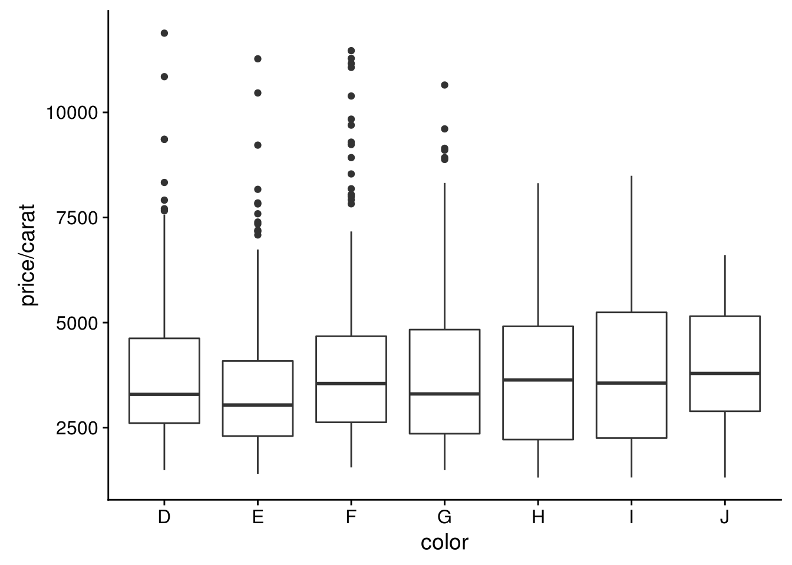
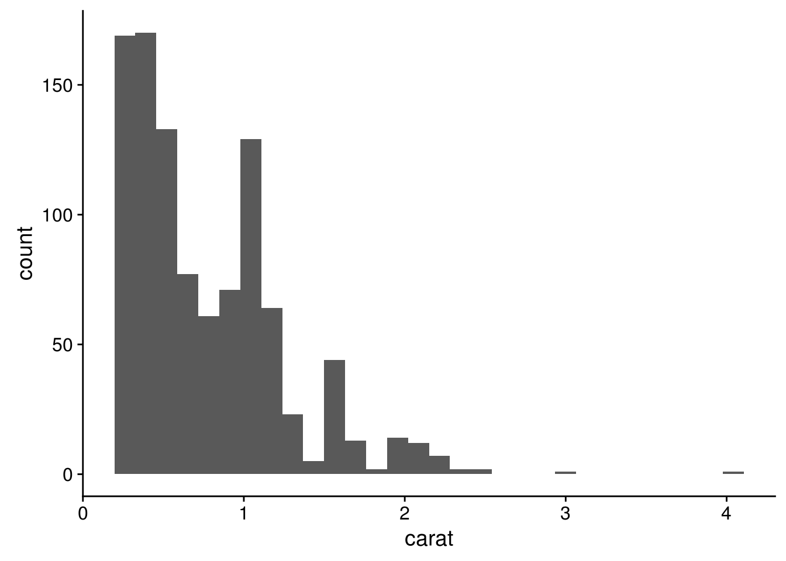
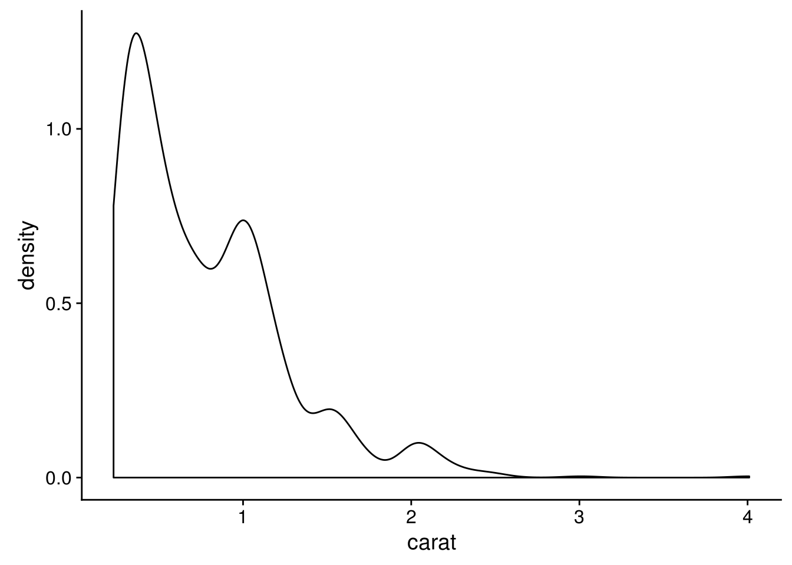
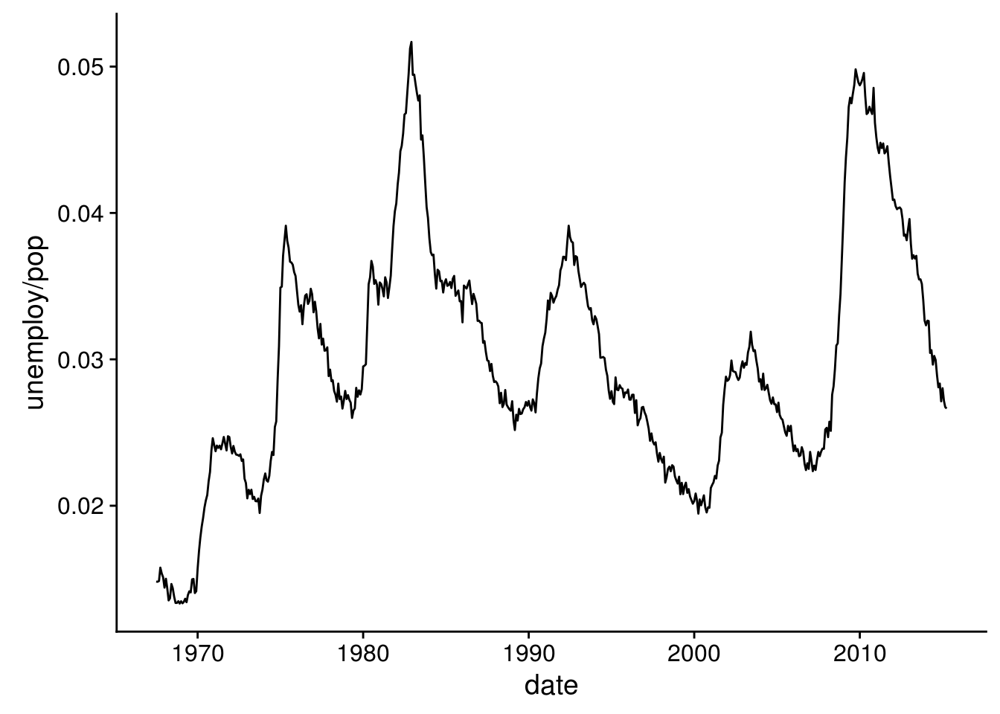
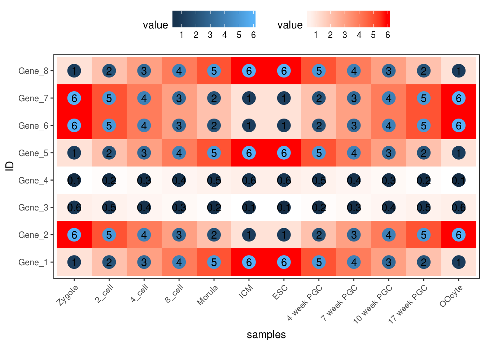
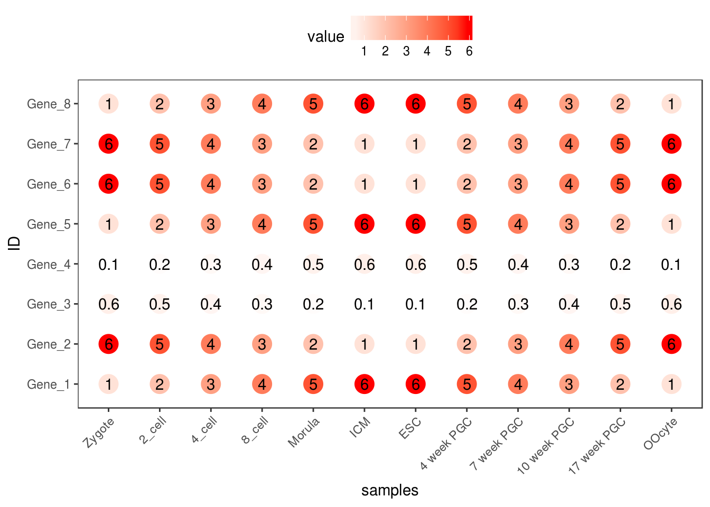
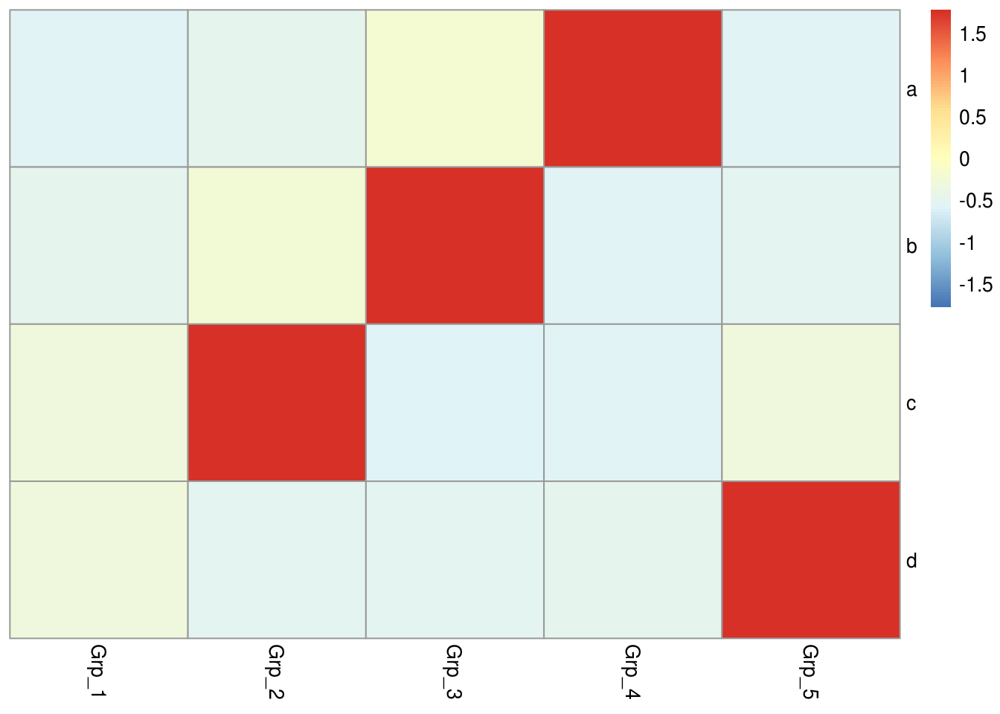

2 R基础
R语言是比较常用的统计分析和绘图语言，拥有强大的统计库、绘图库和生信分析的Bioconductor库，是学习生物信息分析的必备语言之一。
2.1 R安装
Linux下安装
如果使用的是新版的操作系统。直接可以用sudo apt-get install r-base 或者yum install r-base来安装。
若系统版本老，或没有根用户权限，则需要下载编译源码安装，最新地址为https://cran.r-project.org/src/base/R-latest.tar.gz。
具体编译方式为 (Linux下软件安装见 http://blog.genesino.com/2016/06/bash1):
# configure是收集系统信息，生成Makefile的过程
# --enable-R-shlib 需要设置，使得其他程序包括Rstudio可以使用R的动态库
# --prefix指定软件安装目录，需使用绝对路径
./configure --prefix=/home/ysx/R/4.0.2 --enable-R-shlib
# 也可以使用这个命令，共享系统的blas库，提高运输速度
#./configure --prefix=/home/ysx/R/4.0.2 --enable-R-shlib --with-blas --with-lapack
# make是编译的过程
make
# 安装到指定目录的过程
make install安装完成之后，在Linux终端输入R即可启动交互式运行界面，ctrl+d退出R运行界面。若提示找不到命令，需要判断有没有加入进环境变量。
Windows下安装
下载 https://cran.r-project.org/bin/windows/双击就可以了。
两者都需要考虑环境变量，若有问题，见文后的参考。
2.2 Rstudio基础
Rstudio是编辑、运行R语言的最为理想的工具之一，支持纯R脚本、Rmarkdown (脚本文档混排)、Bookdown (脚本文档混排成书)、Shiny (交互式网络应用)等。
2.2.1 Rstudio版本
Rsdutio分为桌面版和服务器版，桌面版可以在单机使用，服务器版可以从浏览器访问供多人使用。
服务器版安装好之后，访问地址为<服务器IP:8787> (8787为默认端口号)，用户名和密码为Linux用户的用户名和密码。
2.2.2 Rstudio安装
Linux下安装服务器版
安装参考 https://www.rstudio.com/products/rstudio/download-server/
# 自己根据自己安装时间自己去获取最新软件的下载地址
wget -c https://download2.rstudio.org/server/centos6/x86_64/rstudio-server-rhel-1.3.1073-x86_64.rpm
sudo yum install --nogpgcheck rstudio-server-rhel-1.3.1073-x86_64.rpm安装完之后的检测、启动和配置
sudo rstudio-server verify-installation #查看是否安装正确
sudo rstudio-server start ## 启动
sudo rstudio-server status ## 查看状态
sudo rstudio-server stop ## 停止
ifconfig | grep 'inet addr' ## 查看服务端ip地址
sudo rstudio-server start ## 修改配置文件后重启
sudo rstudio-server active-sessions ## 列出活跃的sessions:
sudo rstudio-server suspend-session <pid> ## 暂停session
sudo rstudio-server suspend-all ##暂停所有session- 如果启动失败，进入Rstudio日志目录查看错误信息：
/var/log/rstudio-server/ - Rstudio的其它配置可在配置文件修改：
- /etc/rstudio/rserver.conf
www-port=8787 (default)
www-address=0.0.0.0 (default)
rsession-ld-library-path=/opt/local/lib:/opt/local/someapp/lib
rsession-which-r=/usr/local/bin/R- /etc/rstudio/rsession.conf
- Timeout
[user]
session-timeout-minutes=30
[@powerusers]
session-timeout-minutes=0配置好并且rstudio-server成功启动后，就可以在火狐或谷歌浏览器中输入IP地址:端口号，比如127.123,34.29:8787进行访问了。
如果该网址不能打开，一般有2个原因：
安装
rstudio-server的服务器是内网IP，不可以在外网访问，只能被连接到同一台路由器的电脑访问。这时需要配置外网IP或百度查找下其它IP穿透方式的设置。确定自己的服务器没有被防火墙限制端口，一般在学校或科研单位会设置防火墙屏蔽大部分端口，这时联系网络管理员开通相应的端口即可。
Windows下安装桌面版
下载之后 (https://www.rstudio.com/products/rstudio/download2/)双击安装 (若windows登录名为中文，需要使用管理员权限)，其它无需要注意的。

2.3 R基本语法

2.3.2 R中的变量及其初始化
## [1] 10## [1] "abc"## [1] TRUE## [1] TRUE## [1] FALSE## [1] FALSE FALSE FALSE FALSE FALSE## [1] TRUE## $element1
## [1] 1 2 3 4
##
## $element2
## [1] 1 2 3 4 5## [,1] [,2] [,3] [,4]
## [1,] 1 2 3 4
## [2,] 5 6 7 8
## [3,] 9 10 11 12
## [4,] 13 14 15 16
## [5,] 17 18 19 20## [1] TRUE## [1] 5 4## [,1] [,2] [,3] [,4]
## [1,] 1 6 11 16
## [2,] 2 7 12 17
## [3,] 3 8 13 18
## [4,] 4 9 14 19
## [5,] 5 10 15 20## [1] "矩阵a的行数 5"## [1] "矩阵a的列数 4"## NULL## [,1] [,2] [,3] [,4]
## a 1 6 11 16
## b 2 7 12 17
## c 3 8 13 18
## d 4 9 14 19
## e 5 10 15 20## [1] "a" "b" "c" "d"## a b c d
## a 1 6 11 16
## b 2 7 12 17
## c 3 8 13 18
## d 4 9 14 19
## e 5 10 15 202.3.3 变量类型和转换
不同的变量类型有不同的操作方式，is系列和as系列函数用来判断变量的属性和转换变量的属性
## [1] FALSE## [1] TRUE## [1] TRUE## [1] FALSE## [1] TRUE2.3.4 R中矩阵运算
# 获得随机的正态分布数据
# random generation for the normal distribution with mean equal to ‘mean’
# and standard deviation equal to ‘sd’.
rnorm(10, mean = 0, sd = 1) # 正态分布的随机数## [1] 0.52712467 -0.10475994 -0.09139129 -0.41669693 0.18459219 -0.40894546
## [7] 2.48039595 0.23856780 0.99240288 0.12540542# 获得随机的均匀分布的数据
# random generation for the uniform distribution with mean equal to ‘mean’
# and standard deviation equal to ‘sd’.
runif(10, min = 0, max = 1) # 平均分布的随机数## [1] 0.597723095 0.892481028 0.191395164 0.620892942 0.561990018 0.754794815
## [7] 0.913468442 0.005828207 0.908370379 0.220653976## [1] 1 1 1 1 1## [,1]
## [1,] -1.2649111
## [2,] -0.6324555
## [3,] 0.0000000
## [4,] 0.6324555
## [5,] 1.2649111
## attr(,"scaled:center")
## [1] 3
## attr(,"scaled:scale")
## [1] 1.581139scale默认操作对等于
## [1] -1.2649111 -0.6324555 0.0000000 0.6324555 1.2649111a <- c(rnorm(5), rnorm(5,1), runif(5), runif(5,-1,1), 1:5, rep(0,5), c(2,10,11,13,4),
scale(1:5)[1:5])
a## [1] -0.2138275 -2.9222701 -0.6744831 -1.4005780 0.6905400 1.2549925
## [7] 0.8959074 0.8356582 1.0059939 -0.5865703 0.7674368 0.1619154
## [13] 0.3920250 0.1162514 0.4566943 -0.7023189 -0.3025084 0.9406374
## [19] -0.5611974 0.9154688 1.0000000 2.0000000 3.0000000 4.0000000
## [25] 5.0000000 0.0000000 0.0000000 0.0000000 0.0000000 0.0000000
## [31] 2.0000000 10.0000000 11.0000000 13.0000000 4.0000000 -1.2649111
## [37] -0.6324555 0.0000000 0.6324555 1.2649111## [,1] [,2] [,3] [,4] [,5]
## [1,] -0.2138275 -2.9222701 -0.6744831 -1.4005780 0.6905400
## [2,] 1.2549925 0.8959074 0.8356582 1.0059939 -0.5865703
## [3,] 0.7674368 0.1619154 0.3920250 0.1162514 0.4566943
## [4,] -0.7023189 -0.3025084 0.9406374 -0.5611974 0.9154688
## [5,] 1.0000000 2.0000000 3.0000000 4.0000000 5.0000000
## [6,] 0.0000000 0.0000000 0.0000000 0.0000000 0.0000000
## [7,] 2.0000000 10.0000000 11.0000000 13.0000000 4.0000000
## [8,] -1.2649111 -0.6324555 0.0000000 0.6324555 1.2649111## [1] -4.520619e+00 3.405982e+00 1.894323e+00 2.900814e-01 1.500000e+01
## [6] 0.000000e+00 4.000000e+01 2.220446e-16# 注意检查括号的配对
#a <- a[rowSums(abs(a)!=0,]
#错误: 意外的']' in "a <- a[rowSums(abs(a)!=0,]"
# 去除全部为0的行
a <- a[rowSums(abs(a))!=0,]
# 另外一种方式去除全部为0的行
#a[rowSums(a==0)<ncol(a),]
a## [,1] [,2] [,3] [,4] [,5]
## [1,] -0.2138275 -2.9222701 -0.6744831 -1.4005780 0.6905400
## [2,] 1.2549925 0.8959074 0.8356582 1.0059939 -0.5865703
## [3,] 0.7674368 0.1619154 0.3920250 0.1162514 0.4566943
## [4,] -0.7023189 -0.3025084 0.9406374 -0.5611974 0.9154688
## [5,] 1.0000000 2.0000000 3.0000000 4.0000000 5.0000000
## [6,] 2.0000000 10.0000000 11.0000000 13.0000000 4.0000000
## [7,] -1.2649111 -0.6324555 0.0000000 0.6324555 1.2649111矩阵运算，R默认针对整个数据进行常见运算
## [,1] [,2] [,3] [,4] [,5]
## [1,] -0.4276551 -5.8445403 -1.348966 -2.8011560 1.3810801
## [2,] 2.5099850 1.7918148 1.671316 2.0119878 -1.1731406
## [3,] 1.5348737 0.3238308 0.784050 0.2325029 0.9133886
## [4,] -1.4046379 -0.6050169 1.881275 -1.1223949 1.8309376
## [5,] 2.0000000 4.0000000 6.000000 8.0000000 10.0000000
## [6,] 4.0000000 20.0000000 22.000000 26.0000000 8.0000000
## [7,] -2.5298221 -1.2649111 0.000000 1.2649111 2.5298221## [,1] [,2] [,3] [,4] [,5]
## [1,] 0.2795635 1.9716889 0.7437158 1.2633818 0.7574842
## [2,] 1.1731226 0.9228885 0.8762975 1.0043172 0.6659114
## [3,] 0.8216587 0.2165050 0.4771851 0.1586620 0.5426982
## [4,] 0.7675014 0.3812927 0.9565306 0.6426530 0.9376975
## [5,] 1.0000000 1.5849625 2.0000000 2.3219281 2.5849625
## [6,] 1.5849625 3.4594316 3.5849625 3.8073549 2.3219281
## [7,] 1.1794544 0.7070437 0.0000000 0.7070437 1.1794544## [1] 13## [1] -2.92227## [1] 7## [1] 5## [,1] [,2] [,3] [,4] [,5] [,6]
## [1,] -0.2138275 -2.9222701 -0.6744831 -1.4005780 0.6905400 1
## [2,] 1.2549925 0.8959074 0.8356582 1.0059939 -0.5865703 2
## [3,] 0.7674368 0.1619154 0.3920250 0.1162514 0.4566943 3
## [4,] -0.7023189 -0.3025084 0.9406374 -0.5611974 0.9154688 4
## [5,] 1.0000000 2.0000000 3.0000000 4.0000000 5.0000000 5
## [6,] 2.0000000 10.0000000 11.0000000 13.0000000 4.0000000 6
## [7,] -1.2649111 -0.6324555 0.0000000 0.6324555 1.2649111 7## [,1] [,2] [,3] [,4] [,5]
## [1,] -0.2138275 -2.9222701 -0.6744831 -1.4005780 0.6905400
## [2,] 1.2549925 0.8959074 0.8356582 1.0059939 -0.5865703
## [3,] 0.7674368 0.1619154 0.3920250 0.1162514 0.4566943
## [4,] -0.7023189 -0.3025084 0.9406374 -0.5611974 0.9154688
## [5,] 1.0000000 2.0000000 3.0000000 4.0000000 5.0000000
## [6,] 2.0000000 10.0000000 11.0000000 13.0000000 4.0000000
## [7,] -1.2649111 -0.6324555 0.0000000 0.6324555 1.2649111
## [8,] 1.0000000 2.0000000 3.0000000 4.0000000 5.0000000## [1] 1.84789449 0.52798175 0.06831292 0.65143955 2.50000000 22.50000000
## [7] 1.00000000## [1] 1.0765083 0.1632143 0.3411605 0.5927590 1.4826000 4.4478000 0.9376786## [1] 0.4059103 1.3143698 2.2134054 2.3989893 1.6772920## [,1] [,2] [,3] [,4] [,5]
## [1,] -0.2138275 -2.9222701 -0.6744831 -1.4005780 0.6905400
## [2,] -0.7023189 -0.3025084 0.9406374 -0.5611974 0.9154688
## [3,] 1.0000000 2.0000000 3.0000000 4.0000000 5.0000000
## [4,] 2.0000000 10.0000000 11.0000000 13.0000000 4.0000000
## [5,] -1.2649111 -0.6324555 0.0000000 0.6324555 1.2649111## [1] 1 4 2 3 5## [1] 4 3 1 5 2## [,1] [,2] [,3] [,4] [,5]
## [1,] 2.0000000 10.0000000 11.0000000 13.0000000 4.0000000
## [2,] 1.0000000 2.0000000 3.0000000 4.0000000 5.0000000
## [3,] -0.2138275 -2.9222701 -0.6744831 -1.4005780 0.6905400
## [4,] -1.2649111 -0.6324555 0.0000000 0.6324555 1.2649111
## [5,] -0.7023189 -0.3025084 0.9406374 -0.5611974 0.9154688rownames(c) <- paste('Gene', letters[1:nrow(c)], sep="_")
colnames(c) <- toupper(letters[1:ncol(c)])
c## A B C D E
## Gene_a 2.0000000 10.0000000 11.0000000 13.0000000 4.0000000
## Gene_b 1.0000000 2.0000000 3.0000000 4.0000000 5.0000000
## Gene_c -0.2138275 -2.9222701 -0.6744831 -1.4005780 0.6905400
## Gene_d -1.2649111 -0.6324555 0.0000000 0.6324555 1.2649111
## Gene_e -0.7023189 -0.3025084 0.9406374 -0.5611974 0.9154688## Gene_a Gene_b Gene_c Gene_d Gene_e
## A 2 1 -0.2138275 -1.2649111 -0.7023189
## B 10 2 -2.9222701 -0.6324555 -0.3025084
## C 11 3 -0.6744831 0.0000000 0.9406374
## D 13 4 -1.4005780 0.6324555 -0.5611974
## E 4 5 0.6905400 1.2649111 0.9154688## Gene_a Gene_b Gene_c Gene_d Gene_e
## A 2 1 0.00000 0.0000000 0.0000000
## B 10 2 0.00000 0.0000000 0.0000000
## C 11 3 0.00000 0.0000000 0.9406374
## D 13 4 0.00000 0.6324555 0.0000000
## E 4 5 0.69054 1.2649111 0.9154688## num [1:5, 1:5] 2 10 11 13 4 1 2 3 4 5 ...
## - attr(*, "dimnames")=List of 2
## ..$ : chr [1:5] "A" "B" "C" "D" ...
## ..$ : chr [1:5] "Gene_a" "Gene_b" "Gene_c" "Gene_d" ...## 'data.frame': 5 obs. of 5 variables:
## $ Gene_a: num 2 10 11 13 4
## $ Gene_b: num 1 2 3 4 5
## $ Gene_c: num 0 0 0 0 0.691
## $ Gene_d: num 0 0 0 0.632 1.265
## $ Gene_e: num 0 0 0.941 0 0.915## Gene_a Gene_b Gene_c Gene_d Gene_e
## A 2 1 0.00000 0.0000000 0.0000000
## B 10 2 0.00000 0.0000000 0.0000000
## C 11 3 0.00000 0.0000000 0.9406374
## D 13 4 0.00000 0.6324555 0.0000000
## E 4 5 0.69054 1.2649111 0.91546882.3.5 R中矩阵筛选合并
# 读入样品信息
sampleInfo = "Samp;Group;Genotype
A;Control;WT
B;Control;WT
D;Treatment;Mutant
C;Treatment;Mutant
E;Treatment;WT
F;Treatment;WT"
phenoData = read.table(text=sampleInfo,sep=";", header=T, row.names=1, quote="")
phenoData## Group Genotype
## A Control WT
## B Control WT
## D Treatment Mutant
## C Treatment Mutant
## E Treatment WT
## F Treatment WT# 把样品信息按照基因表达矩阵中的样品信息排序，并只保留有基因表达信息的样品
# ‘%in%’ is a more intuitive interface as a binary operator, which
# returns a logical vector indicating if there is a match or not for
# its left operand.
phenoData = phenoData[rownames(phenoData) %in% rownames(expr),]
phenoData## Group Genotype
## A Control WT
## B Control WT
## D Treatment Mutant
## C Treatment Mutant
## E Treatment WT# 合并矩阵
# by=0 表示按照行的名字排序
# by=columnname 表示按照共有的某一列合并
# 合并后多出了新的一列Row.names
merge_data = merge(expr, phenoData, by=0, all.x=T)
merge_data## Row.names Gene_a Gene_b Gene_c Gene_d Gene_e Group Genotype
## 1 A 2 1 -0.2138275 -1.2649111 -0.7023189 Control WT
## 2 B 10 2 -2.9222701 -0.6324555 -0.3025084 Control WT
## 3 C 11 3 -0.6744831 0.0000000 0.9406374 Treatment Mutant
## 4 D 13 4 -1.4005780 0.6324555 -0.5611974 Treatment Mutant
## 5 E 4 5 0.6905400 1.2649111 0.9154688 Treatment WT## Row.names Gene_a Gene_b Gene_c Gene_d Gene_e Group Genotype
## A A 2 1 -0.2138275 -1.2649111 -0.7023189 Control WT
## B B 10 2 -2.9222701 -0.6324555 -0.3025084 Control WT
## C C 11 3 -0.6744831 0.0000000 0.9406374 Treatment Mutant
## D D 13 4 -1.4005780 0.6324555 -0.5611974 Treatment Mutant
## E E 4 5 0.6905400 1.2649111 0.9154688 Treatment WT## Gene_a Gene_b Gene_c Gene_d Gene_e Group Genotype
## A 2 1 -0.2138275 -1.2649111 -0.7023189 Control WT
## B 10 2 -2.9222701 -0.6324555 -0.3025084 Control WT
## C 11 3 -0.6744831 0.0000000 0.9406374 Treatment Mutant
## D 13 4 -1.4005780 0.6324555 -0.5611974 Treatment Mutant
## E 4 5 0.6905400 1.2649111 0.9154688 Treatment WT## Gene_a Gene_b Gene_c Gene_d Gene_e
## A 2 1 -0.2138275 -1.2649111 -0.7023189
## B 10 2 -2.9222701 -0.6324555 -0.3025084
## C 11 3 -0.6744831 0.0000000 0.9406374
## D 13 4 -1.4005780 0.6324555 -0.5611974
## E 4 5 0.6905400 1.2649111 0.91546882.3.6 str的应用
str: Compactly display the internal structure of an R object, a
diagnostic function and an alternative to ‘summary (and to some
extent, ’dput’). Ideally, only one line for each ‘basic’
structure is displayed. It is especially well suited to compactly
display the (abbreviated) contents of (possibly nested) lists.
The idea is to give reasonable output for any R object. It
calls ‘args’ for (non-primitive) function objects.
str用来告诉结果的构成方式，对于不少Bioconductor的包，或者复杂的R函数的输出，都是一堆列表的嵌套，str(complex_result)会输出每个列表的名字，方便提取对应的信息。
## List of 2
## $ a: chr "A"
## $ L:List of 100
## ..$ : int 1
## ..$ : int 2
## ..$ : int 3
## ..$ : int 4
## ..$ : int 5
## ..$ : int 6
## ..$ : int 7
## ..$ : int 8
## ..$ : int 9
## .. [list output truncated]利用str查看pca的结果，具体的PCA应用查看 http://mp.weixin.qq.com/s/sRElBMkyR9rGa4TQp9KjNQ。
## Standard deviations (1, .., p=5):
## [1] 4.842700e+00 2.060965e+00 7.007376e-01 5.558627e-01 7.775454e-17
##
## Rotation (n x k) = (5 x 5):
## PC1 PC2 PC3 PC4 PC5
## Gene_a 0.9791016897 0.003788981 0.1719731 -0.10849318 0.000000e+00
## Gene_b 0.0782878704 -0.731231501 -0.4159160 0.02170449 -5.345225e-01
## Gene_c -0.1810480386 -0.420752292 0.6755017 -0.57782918 1.010029e-16
## Gene_d 0.0495135967 -0.462471408 -0.2630484 0.01372713 8.451543e-01
## Gene_e -0.0009497244 -0.272715676 0.5214807 0.80850674 -8.829184e-16## List of 5
## $ sdev : num [1:5] 4.84 2.06 7.01e-01 5.56e-01 7.78e-17
## $ rotation: num [1:5, 1:5] 0.9791 0.07829 -0.18105 0.04951 -0.00095 ...
## ..- attr(*, "dimnames")=List of 2
## .. ..$ : chr [1:5] "Gene_a" "Gene_b" "Gene_c" "Gene_d" ...
## .. ..$ : chr [1:5] "PC1" "PC2" "PC3" "PC4" ...
## $ center : Named num [1:5] 8.00 3.00 -9.04e-01 4.44e-17 5.80e-02
## ..- attr(*, "names")= chr [1:5] "Gene_a" "Gene_b" "Gene_c" "Gene_d" ...
## $ scale : logi FALSE
## $ x : num [1:5, 1:5] -6.22 2.21 2.89 5.1 -3.99 ...
## ..- attr(*, "dimnames")=List of 2
## .. ..$ : chr [1:5] "A" "B" "C" "D" ...
## .. ..$ : chr [1:5] "PC1" "PC2" "PC3" "PC4" ...
## - attr(*, "class")= chr "prcomp"## [1] 4.842700e+00 2.060965e+00 7.007376e-01 5.558627e-01 7.775454e-172.3.7 R的包管理
什么时候需要安装包
如何安装R包
install.packages("package_name")
# 指定安装来源
install.packages("package_name", repo="http://cran.us.r-project.org")
# 安装Bioconductor的包
if (!requireNamespace("BiocManager", quietly = TRUE))
install.packages("BiocManager", update = F)
BiocManager::install(c("RUVSeq","pcaMethods"))
# 安装Github的R包
install.packages("devtools")
devtools::install_github("JustinaZ/pcaReduce")
# 手动安装, 首先下载包的源文件（压缩版就可），然后在终端运行下面的命令。
ct@ysx:~$ R CMD INSTALL package.tar.gz
# 移除包
remove.packages("package_name")
# 查看所有安装的包
library()
# 查看特定安装包的版本
installed.packages()[c("ggplot2"), c("Package", "Version")]
# Package Version
# "ggplot2" "3.3.2"
# 查看默认安装包的位置
.libPaths()
# 查看已加载的包
.packages()
# 调用安装的包
library(package_name)自动安装包
2.4 检查并安装本教程需要的 R 包
site = "https://mirrors.tuna.tsinghua.edu.cn/CRAN"
# options(BioC_mirror = "https://mirrors.tuna.tsinghua.edu.cn/bioconductor")
options(BioC_mirror="https://mirrors.westlake.edu.cn/bioconductor")
if (!requireNamespace("BiocManager", quietly = TRUE))
install.packages("BiocManager", repos = site)
a = rownames(installed.packages())
install_bioc <- c(
"amap",
"BiocParallel",
"cowplot",
"data.table",
"dendextend",
"DESeq2",
"dplyr",
"ggfortify",
"ggplot2",
"ggpubr",
"ggrepel",
"ggstatsplot",
"ggthemes",
"gplots",
"grid",
"gridExtra",
"Hmisc",
"knitr",
"limma",
"patchwork",
"pheatmap",
"plyr ",
"psych",
"RColorBrewer",
"reshape2",
"scatterplot3d",
"showtext",
"stringr",
"survival",
"survminer",
"sva",
"tidyr",
"tidyverse",
"UpSetR",
"useful",
"VennDiagram"
)
for (i in install_bioc) {
if (!i %in% a)
BiocManager::install(i)
}## 'getOption("repos")' replaces Bioconductor standard repositories, see
## 'help("repositories", package = "BiocManager")' for details.
## Replacement repositories:
## CRAN: https://cran.rstudio.com/## Bioconductor version 3.20 (BiocManager 1.30.26), R 4.4.2 (2024-10-31)## Installing package(s) 'plyr '## Old packages: 'DOSE', 'edgeR', 'fgsea', 'GenomeInfoDb', 'gert', 'ggbeeswarm',
## 'ggsci', 'igraph', 'IRanges', 'lava', 'limma', 'microeco', 'multcomp',
## 'parallelly', 'promises', 'reformulas', 'reticulate', 'rvest', 'vroom',
## 'xfun', 'xml2'## 'getOption("repos")' replaces Bioconductor standard repositories, see
## 'help("repositories", package = "BiocManager")' for details.
## Replacement repositories:
## CRAN: https://cran.rstudio.com/## Bioconductor version 3.20 (BiocManager 1.30.26), R 4.4.2 (2024-10-31)## Installing package(s) 'showtext'## also installing the dependencies 'sysfonts', 'showtextdb'##
## The downloaded binary packages are in
## /var/folders/_b/tnc424qj6g9f8xvfhmvdr0h00000gn/T//RtmpWuDZJM/downloaded_packages## Old packages: 'DOSE', 'edgeR', 'fgsea', 'GenomeInfoDb', 'gert', 'ggbeeswarm',
## 'ggsci', 'igraph', 'IRanges', 'lava', 'limma', 'microeco', 'multcomp',
## 'parallelly', 'promises', 'reformulas', 'reticulate', 'rvest', 'vroom',
## 'xfun', 'xml2'installed_packages = installed.packages()
if (!"ggbeeswarm" %in% a){
install.packages("https://cran.r-project.org/src/contrib/Archive/ggbeeswarm/ggbeeswarm_0.6.0.tar.gz", repos = NULL, type = "source")
} else {
if (installed_packages["ggbeeswarm","Version"] != "0.6.0") {
install.packages("https://cran.r-project.org/src/contrib/Archive/ggbeeswarm/ggbeeswarm_0.6.0.tar.gz", repos = NULL, type = "source")
}
}
if (!"ImageGP" %in% a) {
# devtools::install_github("Tong-Chen/ImageGP")
devtools::install_git("https://gitee.com/ct5869/ImageGP.git")
}2.5 ggplot2绘图
data <- "Gene;Sample;Group;Abundance
Gene1;KO1;KO;1.2
Gene2;KO1;KO;1.4
Gene3;KO1;KO;16
Gene4;KO1;KO;10
Gene5;KO1;KO;25
Gene6;KO1;KO;30
Gene7;KO1;KO;2
Gene8;KO1;KO;3
Gene1;KO2;KO;1.2
Gene2;KO2;KO;1.4
Gene3;KO2;KO;16
Gene4;KO2;KO;10
Gene5;KO2;KO;25
Gene6;KO2;KO;30
Gene7;KO2;KO;2
Gene8;KO2;KO;3
Gene1;KO3;KO;1.2
Gene2;KO3;KO;1.4
Gene3;KO3;KO;16
Gene4;KO3;KO;10
Gene5;KO3;KO;25
Gene6;KO3;KO;30
Gene7;KO3;KO;2
Gene8;KO3;KO;3
Gene8;WT1;WT;1.2
Gene7;WT1;WT;1.4
Gene6;WT1;WT;16
Gene5;WT1;WT;10
Gene4;WT1;WT;25
Gene3;WT1;WT;30
Gene2;WT1;WT;2
Gene1;WT1;WT;3
Gene8;WT2;WT;1.2
Gene7;WT2;WT;1.4
Gene6;WT2;WT;16
Gene5;WT2;WT;10
Gene4;WT2;WT;25
Gene3;WT2;WT;30
Gene2;WT2;WT;2
Gene1;WT2;WT;3
Gene8;WT3;WT;1.2
Gene7;WT3;WT;1.4
Gene6;WT3;WT;16
Gene5;WT3;WT;10
Gene4;WT3;WT;25
Gene3;WT3;WT;30
Gene2;WT3;WT;2
Gene1;WT3;WT;3"
data <- read.table(text=data, header=T, row.names=NULL, sep=";")
data[sample(1:nrow(data),6),]## Gene Sample Group Abundance
## 32 Gene1 WT1 WT 3.0
## 41 Gene8 WT3 WT 1.2
## 48 Gene1 WT3 WT 3.0
## 16 Gene8 KO2 KO 3.0
## 11 Gene3 KO2 KO 16.0
## 5 Gene5 KO1 KO 25.0初始化ggplot，建立坐标系
 绘制几何属性
绘制几何属性
 映射数据到几何形状的属性，如颜色

映射数据到几何形状的属性，如大小

自定义颜色

设置主题属性
p + geom_point(aes(color=Abundance)) + scale_color_continuous(low="green", high="red") + theme_classic()
放大点，并添加文字作为label
p + geom_point(aes(color=Abundance), size=10) +
scale_color_continuous(low="green", high="red") +
geom_text(aes(label=Abundance)) +
theme_classic()
自定义注释
p + geom_point(aes(color=Abundance), size=10) +
scale_color_continuous(low="green", high="red") +
geom_text(aes(label=Abundance)) +
annotate("rect",xmin=0.5, xmax=3.5, ymin=5.5,ymax=6.5,alpha=0.2) +
theme_classic()
绘制热图
p + geom_tile(aes(fill=Abundance)) +
scale_fill_continuous(low="green", high="red") +
geom_text(aes(label=Abundance)) +
theme_classic()
转换坐标系
p + geom_tile(aes(fill=Abundance)) +
scale_fill_gradient(low = "white", high = "steelblue") +
geom_text(aes(label=Abundance)) +
coord_polar(theta="x") +
theme(panel.background=element_blank(),
axis.title=element_blank(),
panel.grid=element_blank(),
axis.ticks=element_blank(),
axis.text.y=element_text(size=5))
更改横轴的顺序
# paste0(rep(c("WT","KO"),each=3), rep(1:3))
data$Sample <- factor(data$Sample,levels=c("WT1","WT2","WT3","KO1","KO2","KO3"), ordered=T)
p <- ggplot(data, aes(x=Sample, y=Gene)) +
geom_tile(aes(fill=Abundance)) +
scale_fill_continuous(low="green", high="red") +
geom_text(aes(label=Abundance)) +
theme_classic()
p
箱线图展示

小提琴图加点的连线
# geom_line把同一个Gene的数据作为一组
p <- ggplot(data, aes(x=Group, y=Abundance)) +
geom_violin(aes(fill=Group), alpha=0.5) +
geom_line(aes(group=Gene), alpha=0.5)
p
library(ggpubr)
ggviolin(data, x="Group", y="Abundance", fill="Group", palette = "npg", add=c("jitter")) + stat_compare_means(comparisons = list(c("KO", "WT")))
2.5.1 数据格式转换和字符串处理
假如我们的数据如下形式，如何完成上面的图的绘制？
KO1;KO2;KO3;WT1;WT2;WT3
Gene1;1.2;1.2;1.2;3.0;3.0;3.0
Gene2;1.4;1.4;1.4;2.0;2.0;2.0
Gene3;16.0;16.0;16.0;30.0;30.0;30.0
Gene4;10.0;10.0;10.0;25.0;25.0;25.0
Gene5;25.0;25.0;25.0;10.0;10.0;10.0
Gene6;30.0;30.0;30.0;16.0;16.0;16.0
Gene7;2.0;2.0;2.0;1.4;1.4;1.4
Gene8;3.0;3.0;3.0;1.2;1.2;1.2读入数据，查看数据格式 (注意：read.table中参数与之前的不同地方在哪？为什么？)
data_matrix = "KO1;KO2;KO3;WT1;WT2;WT3
Gene1;1.3;1.2;1.4;3.1;3.2;3.3
Gene2;1.1;1.9;1.6;2.3;2.2;2.1
Gene3;16.8;17.0;18.0;33.0;30.0;35.0
Gene4;11.0;13.0;12.0;25.0;26.0;28.0
Gene5;20.0;25.0;23.0;9.0;10.0;13.0
Gene6;33.0;30.0;35.0;16.0;17.0;16.0
Gene7;2.0;2.3;2.0;1.4;1.8;1.4
Gene8;3.0;3.6;3.0;1.2;1.9;1.2"
data_matrix <- read.table(text=data_matrix, header=T, row.names=1, sep=";")
data_matrix## KO1 KO2 KO3 WT1 WT2 WT3
## Gene1 1.3 1.2 1.4 3.1 3.2 3.3
## Gene2 1.1 1.9 1.6 2.3 2.2 2.1
## Gene3 16.8 17.0 18.0 33.0 30.0 35.0
## Gene4 11.0 13.0 12.0 25.0 26.0 28.0
## Gene5 20.0 25.0 23.0 9.0 10.0 13.0
## Gene6 33.0 30.0 35.0 16.0 17.0 16.0
## Gene7 2.0 2.3 2.0 1.4 1.8 1.4
## Gene8 3.0 3.6 3.0 1.2 1.9 1.2宽矩阵转换为长矩阵
library(tidyr)
data_matrix$Gene <- rownames(data_matrix)
data_matrix_long <- gather(data_matrix, key="Sample", value="Abundance", -Gene)
head(data_matrix_long)## Gene Sample Abundance
## 1 Gene1 KO1 1.3
## 2 Gene2 KO1 1.1
## 3 Gene3 KO1 16.8
## 4 Gene4 KO1 11.0
## 5 Gene5 KO1 20.0
## 6 Gene6 KO1 33.0data_matrix_long <- data_matrix_long %>% separate("Sample", c("Group", "Rep"), sep=2, remove=F)
head(data_matrix_long)## Gene Sample Group Rep Abundance
## 1 Gene1 KO1 KO 1 1.3
## 2 Gene2 KO1 KO 1 1.1
## 3 Gene3 KO1 KO 1 16.8
## 4 Gene4 KO1 KO 1 11.0
## 5 Gene5 KO1 KO 1 20.0
## 6 Gene6 KO1 KO 1 33.0获取分组信息 (分组名字等长)
library(stringr)
data_matrix_long$Group2 <- str_sub(data_matrix_long$Sample,start=1,end=2)
head(data_matrix_long)另外一种拆分样本名字的方式 (分组名字和生物重复之间分隔符固定)
library(stringr)
library(tidyr)
data_matrix2 = "KO_1;KO_2;KO_3;WT_1;WT_2;WT_3
Gene1;1.3;1.2;1.4;3.1;3.2;3.3
Gene2;1.1;1.9;1.6;2.3;2.2;2.1
Gene3;16.8;17.0;18.0;33.0;30.0;35.0
Gene4;11.0;13.0;12.0;25.0;26.0;28.0
Gene5;20.0;25.0;23.0;9.0;10.0;13.0
Gene6;33.0;30.0;35.0;16.0;17.0;16.0
Gene7;2.0;2.3;2.0;1.4;1.8;1.4
Gene8;3.0;3.6;3.0;1.2;1.9;1.2"
data_matrix2 <- read.table(text=data_matrix2, header=T, row.names=1, sep=";")
data_matrix2$Gene <- rownames(data_matrix2)
data_matrix_long2 <- gather(data_matrix2, key="Sample", value="Abundance", -Gene)
head(data_matrix_long2)## Gene Sample Abundance
## 1 Gene1 KO_1 1.3
## 2 Gene2 KO_1 1.1
## 3 Gene3 KO_1 16.8
## 4 Gene4 KO_1 11.0
## 5 Gene5 KO_1 20.0
## 6 Gene6 KO_1 33.0data_matrix_long2$Group <- str_split(data_matrix_long2$Sample, pattern="_", simplify=T)[,1]
head(data_matrix_long2)## Gene Sample Abundance Group
## 1 Gene1 KO_1 1.3 KO
## 2 Gene2 KO_1 1.1 KO
## 3 Gene3 KO_1 16.8 KO
## 4 Gene4 KO_1 11.0 KO
## 5 Gene5 KO_1 20.0 KO
## 6 Gene6 KO_1 33.0 KO使用separate更简单
## Gene Sample Group Rep Abundance
## 1 Gene1 KO_1 KO 1 1.3
## 2 Gene2 KO_1 KO 1 1.1
## 3 Gene3 KO_1 KO 1 16.8
## 4 Gene4 KO_1 KO 1 11.0
## 5 Gene5 KO_1 KO 1 20.0
## 6 Gene6 KO_1 KO 1 33.0
## 7 Gene7 KO_1 KO 1 2.0
## 8 Gene8 KO_1 KO 1 3.0
## 9 Gene1 KO_2 KO 2 1.2
## 10 Gene2 KO_2 KO 2 1.9
## 11 Gene3 KO_2 KO 2 17.0
## 12 Gene4 KO_2 KO 2 13.0
## 13 Gene5 KO_2 KO 2 25.0
## 14 Gene6 KO_2 KO 2 30.0
## 15 Gene7 KO_2 KO 2 2.3
## 16 Gene8 KO_2 KO 2 3.6
## 17 Gene1 KO_3 KO 3 1.4
## 18 Gene2 KO_3 KO 3 1.6
## 19 Gene3 KO_3 KO 3 18.0
## 20 Gene4 KO_3 KO 3 12.0
## 21 Gene5 KO_3 KO 3 23.0
## 22 Gene6 KO_3 KO 3 35.0
## 23 Gene7 KO_3 KO 3 2.0
## 24 Gene8 KO_3 KO 3 3.0
## 25 Gene1 WT_1 WT 1 3.1
## 26 Gene2 WT_1 WT 1 2.3
## 27 Gene3 WT_1 WT 1 33.0
## 28 Gene4 WT_1 WT 1 25.0
## 29 Gene5 WT_1 WT 1 9.0
## 30 Gene6 WT_1 WT 1 16.0
## 31 Gene7 WT_1 WT 1 1.4
## 32 Gene8 WT_1 WT 1 1.2
## 33 Gene1 WT_2 WT 2 3.2
## 34 Gene2 WT_2 WT 2 2.2
## 35 Gene3 WT_2 WT 2 30.0
## 36 Gene4 WT_2 WT 2 26.0
## 37 Gene5 WT_2 WT 2 10.0
## 38 Gene6 WT_2 WT 2 17.0
## 39 Gene7 WT_2 WT 2 1.8
## 40 Gene8 WT_2 WT 2 1.9
## 41 Gene1 WT_3 WT 3 3.3
## 42 Gene2 WT_3 WT 3 2.1
## 43 Gene3 WT_3 WT 3 35.0
## 44 Gene4 WT_3 WT 3 28.0
## 45 Gene5 WT_3 WT 3 13.0
## 46 Gene6 WT_3 WT 3 16.0
## 47 Gene7 WT_3 WT 3 1.4
## 48 Gene8 WT_3 WT 3 1.2字符串拼合
library(tidyr)
# group_rep <- as.data.frame(str_split(data_matrix_long2$Sample, pattern="_", simplify=T))
# colnames(group_rep) <- c("Group", "Rep")
# unite(group_rep, col="Sample", sep="_")
data_matrix_long2 %>% separate(Sample, c("Group", "Rep"),sep="_", remove=F) %>% unite(col="Sample2", c("Group","Rep"), sep="-", remove=F)## Gene Sample Sample2 Group Rep Abundance
## 1 Gene1 KO_1 KO-1 KO 1 1.3
## 2 Gene2 KO_1 KO-1 KO 1 1.1
## 3 Gene3 KO_1 KO-1 KO 1 16.8
## 4 Gene4 KO_1 KO-1 KO 1 11.0
## 5 Gene5 KO_1 KO-1 KO 1 20.0
## 6 Gene6 KO_1 KO-1 KO 1 33.0
## 7 Gene7 KO_1 KO-1 KO 1 2.0
## 8 Gene8 KO_1 KO-1 KO 1 3.0
## 9 Gene1 KO_2 KO-2 KO 2 1.2
## 10 Gene2 KO_2 KO-2 KO 2 1.9
## 11 Gene3 KO_2 KO-2 KO 2 17.0
## 12 Gene4 KO_2 KO-2 KO 2 13.0
## 13 Gene5 KO_2 KO-2 KO 2 25.0
## 14 Gene6 KO_2 KO-2 KO 2 30.0
## 15 Gene7 KO_2 KO-2 KO 2 2.3
## 16 Gene8 KO_2 KO-2 KO 2 3.6
## 17 Gene1 KO_3 KO-3 KO 3 1.4
## 18 Gene2 KO_3 KO-3 KO 3 1.6
## 19 Gene3 KO_3 KO-3 KO 3 18.0
## 20 Gene4 KO_3 KO-3 KO 3 12.0
## 21 Gene5 KO_3 KO-3 KO 3 23.0
## 22 Gene6 KO_3 KO-3 KO 3 35.0
## 23 Gene7 KO_3 KO-3 KO 3 2.0
## 24 Gene8 KO_3 KO-3 KO 3 3.0
## 25 Gene1 WT_1 WT-1 WT 1 3.1
## 26 Gene2 WT_1 WT-1 WT 1 2.3
## 27 Gene3 WT_1 WT-1 WT 1 33.0
## 28 Gene4 WT_1 WT-1 WT 1 25.0
## 29 Gene5 WT_1 WT-1 WT 1 9.0
## 30 Gene6 WT_1 WT-1 WT 1 16.0
## 31 Gene7 WT_1 WT-1 WT 1 1.4
## 32 Gene8 WT_1 WT-1 WT 1 1.2
## 33 Gene1 WT_2 WT-2 WT 2 3.2
## 34 Gene2 WT_2 WT-2 WT 2 2.2
## 35 Gene3 WT_2 WT-2 WT 2 30.0
## 36 Gene4 WT_2 WT-2 WT 2 26.0
## 37 Gene5 WT_2 WT-2 WT 2 10.0
## 38 Gene6 WT_2 WT-2 WT 2 17.0
## 39 Gene7 WT_2 WT-2 WT 2 1.8
## 40 Gene8 WT_2 WT-2 WT 2 1.9
## 41 Gene1 WT_3 WT-3 WT 3 3.3
## 42 Gene2 WT_3 WT-3 WT 3 2.1
## 43 Gene3 WT_3 WT-3 WT 3 35.0
## 44 Gene4 WT_3 WT-3 WT 3 28.0
## 45 Gene5 WT_3 WT-3 WT 3 13.0
## 46 Gene6 WT_3 WT-3 WT 3 16.0
## 47 Gene7 WT_3 WT-3 WT 3 1.4
## 48 Gene8 WT_3 WT-3 WT 3 1.2用柱状图看下每个Gene在不同组的表达情况
library(ggplot2)
library(dplyr)
# 给定数据，和x轴、y轴所在列名字
# 直接使用geom_bar就可以绘制柱状图
# position: dodge: 柱子并排放置
p <- ggplot(data_matrix_long, aes(x=Gene, y=Abundance))
p + geom_bar(stat="identity", position="dodge", aes(fill=Sample))
# 如果没有图形界面，运行下面的语句把图存在工作目录下的Rplots.pdf文件中
#dev.off() 柱子有点多，也可以利用mean±SD的形式展现
柱子有点多，也可以利用mean±SD的形式展现
首先计算平均值和标准差，使用group_by按Gene, Group分组，对每组做summarize。
## Gene Sample Group Rep Abundance
## 1 Gene1 KO1 KO 1 1.3
## 2 Gene1 KO2 KO 2 1.2
## 3 Gene1 KO3 KO 3 1.4
## 4 Gene1 WT1 WT 1 3.1
## 5 Gene1 WT2 WT 2 3.2
## 6 Gene1 WT3 WT 3 3.3
## 7 Gene2 KO1 KO 1 1.1
## 8 Gene2 KO2 KO 2 1.9
## 9 Gene2 KO3 KO 3 1.6
## 10 Gene2 WT1 WT 1 2.3
## 11 Gene2 WT2 WT 2 2.2
## 12 Gene2 WT3 WT 3 2.1
## 13 Gene3 KO1 KO 1 16.8
## 14 Gene3 KO2 KO 2 17.0
## 15 Gene3 KO3 KO 3 18.0
## 16 Gene3 WT1 WT 1 33.0
## 17 Gene3 WT2 WT 2 30.0
## 18 Gene3 WT3 WT 3 35.0
## 19 Gene4 KO1 KO 1 11.0
## 20 Gene4 KO2 KO 2 13.0
## 21 Gene4 KO3 KO 3 12.0
## 22 Gene4 WT1 WT 1 25.0
## 23 Gene4 WT2 WT 2 26.0
## 24 Gene4 WT3 WT 3 28.0
## 25 Gene5 KO1 KO 1 20.0
## 26 Gene5 KO2 KO 2 25.0
## 27 Gene5 KO3 KO 3 23.0
## 28 Gene5 WT1 WT 1 9.0
## 29 Gene5 WT2 WT 2 10.0
## 30 Gene5 WT3 WT 3 13.0
## 31 Gene6 KO1 KO 1 33.0
## 32 Gene6 KO2 KO 2 30.0
## 33 Gene6 KO3 KO 3 35.0
## 34 Gene6 WT1 WT 1 16.0
## 35 Gene6 WT2 WT 2 17.0
## 36 Gene6 WT3 WT 3 16.0
## 37 Gene7 KO1 KO 1 2.0
## 38 Gene7 KO2 KO 2 2.3
## 39 Gene7 KO3 KO 3 2.0
## 40 Gene7 WT1 WT 1 1.4
## 41 Gene7 WT2 WT 2 1.8
## 42 Gene7 WT3 WT 3 1.4
## 43 Gene8 KO1 KO 1 3.0
## 44 Gene8 KO2 KO 2 3.6
## 45 Gene8 KO3 KO 3 3.0
## 46 Gene8 WT1 WT 1 1.2
## 47 Gene8 WT2 WT 2 1.9
## 48 Gene8 WT3 WT 3 1.2library(dplyr)
# 获取平均值和标准差
data_m_sd_mean <- data_matrix_long %>% group_by(Gene, Group) %>%
dplyr::summarise(sd=sd(Abundance), mean_value=mean(Abundance))## `summarise()` has grouped output by
## 'Gene'. You can override using the
## `.groups` argument.## Gene Group sd mean_value
## 1 Gene1 KO 0.1000000 1.300000
## 2 Gene1 WT 0.1000000 3.200000
## 3 Gene2 KO 0.4041452 1.533333
## 4 Gene2 WT 0.1000000 2.200000
## 5 Gene3 KO 0.6429101 17.266667
## 6 Gene3 WT 2.5166115 32.666667
## 7 Gene4 KO 1.0000000 12.000000
## 8 Gene4 WT 1.5275252 26.333333
## 9 Gene5 KO 2.5166115 22.666667
## 10 Gene5 WT 2.0816660 10.666667
## 11 Gene6 KO 2.5166115 32.666667
## 12 Gene6 WT 0.5773503 16.333333
## 13 Gene7 KO 0.1732051 2.100000
## 14 Gene7 WT 0.2309401 1.533333
## 15 Gene8 KO 0.3464102 3.200000
## 16 Gene8 WT 0.4041452 1.433333使用geom_errorbar添加误差线
p <- ggplot(data_m_sd_mean, aes(x=Gene, y=mean_value, group=Group)) +
geom_bar(stat="identity", position="dodge", aes(fill=Group)) +
geom_errorbar(aes(ymin=mean_value-sd, ymax=mean_value+sd), width=0.2, position=position_dodge(width=0.9))
p
采用ggpubr绘制barplot+errorbar
library(ggpubr)
ggbarplot(data_matrix_long, x = "Gene", y = "Abundance", color = "Group", #add.params = list(group = "Group"),
add = c("mean_se","jitter"), palette = c("#00AFBB", "#E7B800"),
position = position_dodge())
绘制带Error-bar的堆叠柱状图
library(plyr)
data_m_sd_mean_stack <- data_m_sd_mean
factor_level <- unique(data_m_sd_mean_stack$Group)
data_m_sd_mean_stack$Group <- factor(data_m_sd_mean_stack$Group, levels=factor_level, ordered=T)
mydata2 <- ddply(data_m_sd_mean_stack,.(Gene),transform,ymin = cumsum(mean_value) - sd,ymax = cumsum(mean_value) + sd)
mydata2## Gene Group sd mean_value ymin ymax
## 1 Gene1 KO 0.1000000 1.300000 1.200000 1.400000
## 2 Gene1 WT 0.1000000 3.200000 4.400000 4.600000
## 3 Gene2 KO 0.4041452 1.533333 1.129188 1.937479
## 4 Gene2 WT 0.1000000 2.200000 3.633333 3.833333
## 5 Gene3 KO 0.6429101 17.266667 16.623757 17.909577
## 6 Gene3 WT 2.5166115 32.666667 47.416722 52.449945
## 7 Gene4 KO 1.0000000 12.000000 11.000000 13.000000
## 8 Gene4 WT 1.5275252 26.333333 36.805808 39.860859
## 9 Gene5 KO 2.5166115 22.666667 20.150055 25.183278
## 10 Gene5 WT 2.0816660 10.666667 31.251667 35.414999
## 11 Gene6 KO 2.5166115 32.666667 30.150055 35.183278
## 12 Gene6 WT 0.5773503 16.333333 48.422650 49.577350
## 13 Gene7 KO 0.1732051 2.100000 1.926795 2.273205
## 14 Gene7 WT 0.2309401 1.533333 3.402393 3.864273
## 15 Gene8 KO 0.3464102 3.200000 2.853590 3.546410
## 16 Gene8 WT 0.4041452 1.433333 4.229188 5.037479library(RColorBrewer)
cols = colorRampPalette(brewer.pal(9, "Paired"))(length(factor_level))
mydata2$Group <- factor(mydata2$Group, levels=rev(factor_level), ordered=T)
p <- ggplot(mydata2, aes(x=Gene, y=mean_value, group=Group)) +
geom_bar(stat="identity", aes(fill=Group), position = "stack") +
scale_fill_manual(values=cols) +
geom_errorbar(aes(ymin=ymin, ymax=ymax), width=0.2,color="black", position=position_identity())
p
在柱子中标记百分比值
首先计算百分比，同样是group_by (按照给定的变量分组，然后按组操作)和mutate两个函数(在当前数据表增加新变量)
# group_by: 按照给定的变量分组，然后按组操作
# mutate: 在当前数据表增加新变量
# 第一步增加每个组的加和，第二步计算比例
data_m <- data_matrix_long
data_m <- data_m %>% group_by(Gene) %>% mutate(count=sum(Abundance), freq=round(100*Abundance/count,2)) %>% arrange(Gene, Sample)
head(data_m)## # A tibble: 6 × 7
## # Groups: Gene [1]
## Gene Sample Group Rep Abundance count freq
## <chr> <chr> <chr> <chr> <dbl> <dbl> <dbl>
## 1 Gene1 KO1 KO 1 1.3 561. 0.23
## 2 Gene1 KO2 KO 2 1.2 561. 0.21
## 3 Gene1 KO3 KO 3 1.4 561. 0.25
## 4 Gene1 WT1 WT 1 3.1 561. 0.55
## 5 Gene1 WT2 WT 2 3.2 561. 0.57
## 6 Gene1 WT3 WT 3 3.3 561. 0.59再标记相对比例信息
p <- ggplot(data_m, aes(x=Gene, y=Abundance, group=Group)) +
geom_bar(stat="identity", position="fill", aes(fill=Sample)) +
scale_y_continuous(labels = scales::percent) +
geom_text(aes(label=freq), position=position_fill(vjust=0.5))
p


2.5.3 pheatmap绘制热图
data_matrix = "KO1;KO2;KO3;WT1;WT2;WT3
Gene1;1.2;1.2;1.2;3.0;3.0;3.0
Gene2;1.4;1.4;1.4;2.0;2.0;2.0
Gene3;16.0;16.0;16.0;30.0;30.0;30.0
Gene4;10.0;10.0;10.0;25.0;25.0;25.0
Gene5;25.0;25.0;25.0;10.0;10.0;10.0
Gene6;30.0;30.0;30.0;16.0;16.0;16.0
Gene7;2.0;2.0;2.0;1.4;1.4;1.4
Gene8;3.0;3.0;3.0;1.2;1.2;1.2"
data_matrix <- read.table(text=data_matrix, header=T, row.names=1, sep=";")
head(data_matrix)## KO1 KO2 KO3 WT1 WT2 WT3
## Gene1 1.2 1.2 1.2 3 3 3
## Gene2 1.4 1.4 1.4 2 2 2
## Gene3 16.0 16.0 16.0 30 30 30
## Gene4 10.0 10.0 10.0 25 25 25
## Gene5 25.0 25.0 25.0 10 10 10
## Gene6 30.0 30.0 30.0 16 16 16
metadata <- "samp;Grp
WT1;WT
WT2;WT
WT3;WT
KO1;KO
KO2;KO
KO3;KO"
metadata <- read.table(text=metadata, header=T, row.names=1, sep=";")
pheatmap(data_matrix, annotation_col = metadata)
colorL = colorRampPalette(c("green","red"))(30)
pheatmap(data_matrix, annotation_col = metadata, color = colorL)